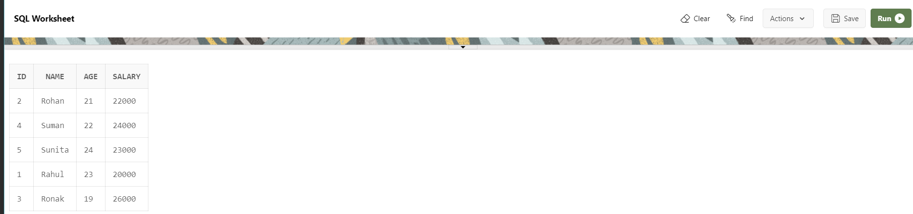

PL/SQL Trigger
Triggers are stored programs, which are automatically executed or fired when some events occur. Triggers are, in fact, written to be executed in response to any of the following events −
A database manipulation (DML) statement (DELETE, INSERT, or UPDATE)
A database definition (DDL) statement (CREATE, ALTER, or DROP).
A database operation (SERVERERROR, LOGON, LOGOFF, STARTUP, or SHUTDOWN).
Benefits of Triggers
- Generating some derived column values automatically
- Enforcing referential integrity
- Event logging and storing information on table access
- Auditing
- Synchronous replication of tables
- Imposing security authorizations
- Preventing invalid transactions
Creating Triggers
CREATE [OR REPLACE ] TRIGGER trigger_name
{BEFORE | AFTER | INSTEAD OF }
{INSERT [OR] | UPDATE [OR] | DELETE}
[OF col_name]
ON table_name
[REFERENCING OLD AS o NEW AS n]
[FOR EACH ROW]
WHEN (condition)
DECLARE
Declaration-statements
BEGIN
Executable-statements
EXCEPTION
Exception-handling-statements
END;
- CREATE [OR REPLACE] TRIGGER trigger_name − Creates or replaces an existing trigger with the trigger_name.
- {BEFORE | AFTER | INSTEAD OF} − This specifies when the trigger will be executed. The INSTEAD OF clause is used for creating trigger on a view.
- {INSERT [OR] | UPDATE [OR] | DELETE} − This specifies the DML operation.
- [OF col_name] − This specifies the column name that will be updated.
- [ON table_name] − This specifies the name of the table associated with the trigger.
- [REFERENCING OLD AS o NEW AS n] − This allows you to refer new and old values for various DML statements, such as INSERT, UPDATE, and DELETE.
- [FOR EACH ROW] − This specifies a row-level trigger, i.e., the trigger will be executed for each row being affected. Otherwise the trigger will execute just once when the SQL statement is executed, which is called a table level trigger.
- WHEN (condition) − This provides a condition for rows for which the trigger would fire. This clause is valid only for row-level triggers.
Table emp:-

Example
CREATE OR REPLACE TRIGGER display_salary_changes
BEFORE DELETE OR INSERT OR UPDATE ON emp
FOR EACH ROW
WHEN (NEW.ID > 0)
DECLARE
salary_diff number;
BEGIN
salary_diff := :NEW.salary - :OLD.salary;
dbms_output.put_line('Old salary: ' || :OLD.salary);
dbms_output.put_line('New salary: ' || :NEW.salary);
dbms_output.put_line('Salary difference: ' || salary_diff);
END;
/
Example
DECLARE
total_rows number(2);
BEGIN
UPDATE emp
SET salary = salary + 4000;
IF sql%notfound THEN
dbms_output.put_line('no employee updated');
ELSIF sql%found THEN
total_rows := sql%rowcount;
dbms_output.put_line( total_rows || ' employee updated ');
END IF;
END;
/